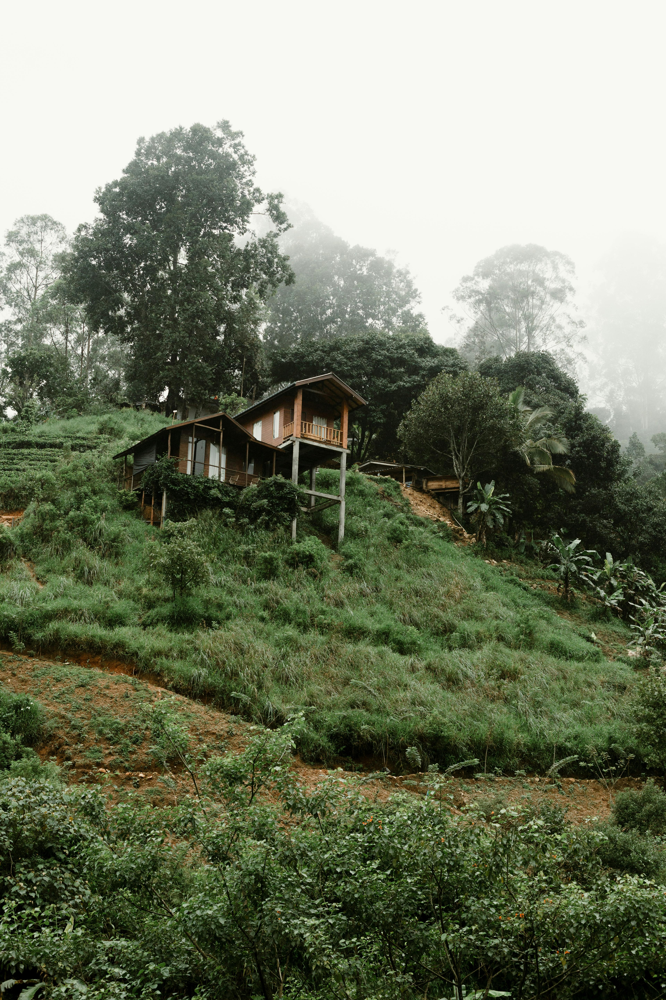
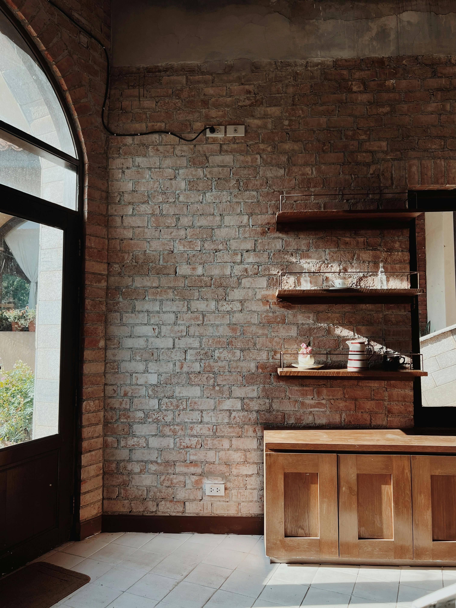
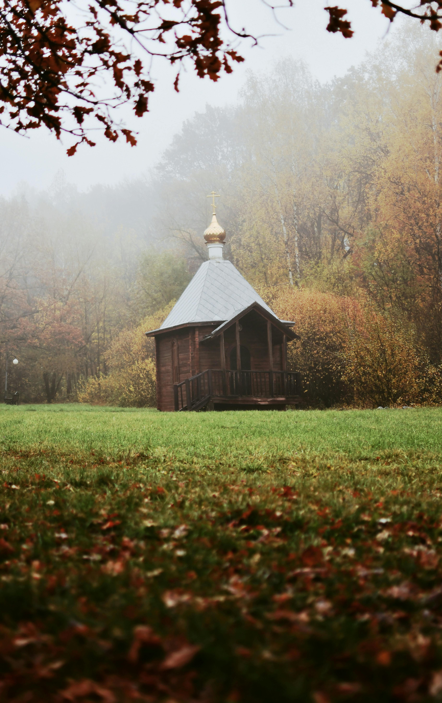
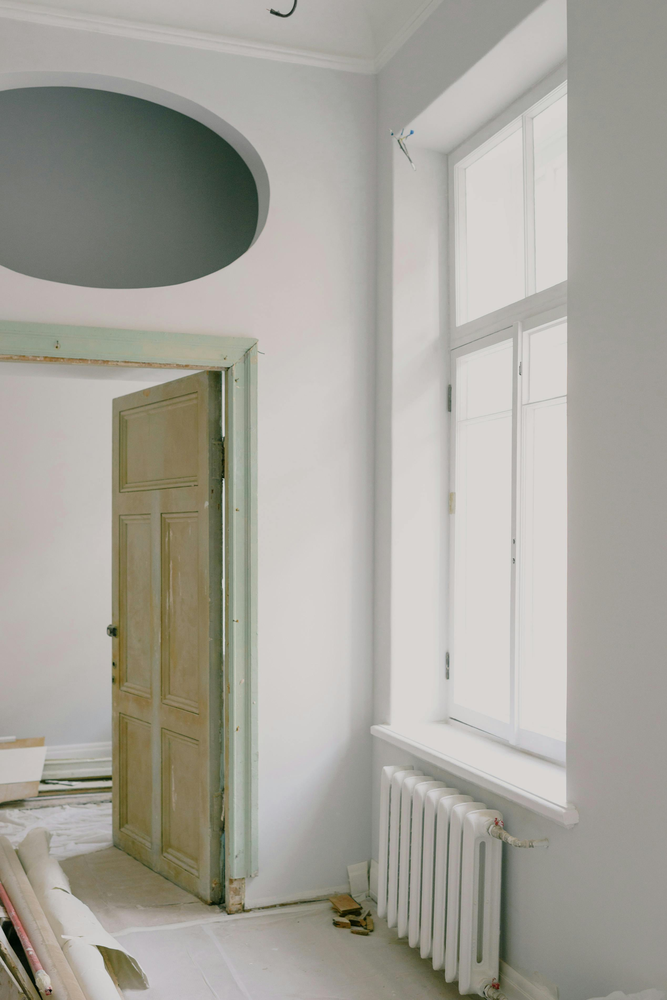

PORTFÓLIO
PROJEKTOV
Od rodinného domu v horskej krajine po sakrálnu stavbu, od rekonštrukcie bistra po chatu v prírode — každý projekt je samostatný príbeh.

001 — Novostavba · Rodinný dom
Rodinný dom Podhorie
Štúdia a projekt novostavby rodinného domu. Čistá forma v dialógu s horskou krajinou a okolitým prostredím.

002 — Rekonštrukcia · Komercia
Bistro Nesluša
Štúdia rekonštrukcie moderného bistro-baru s lokálnym charakterom a čistým interiérovým konceptom.

003 — Novostavba · Rodinný dom
Rodinný dom Nesluša
Štúdia a projekt novostavby rodinného domu. Premyslená dispozícia na mierne svahovitom teréne.

004 — Komercia · Interiér
Akváriá & teráriá Mirage Žilina
Technický návrh akvárii a štúdia terárií pre prevádzku Mirage. Špeciálne riešenie pre komerčnú prevádzku.

005 — Sakrálna stavba
Kaplnka & odpočívadlo Raková–Staškov
Štúdia novostavby kaplnky s odpočívadlom. Tiché miesto v krajine — jednoduchosť formy ako zámer.

006 — Rekonštrukcia · Rodinný dom
Rodinný dom Bytča-Hrabové
Štúdia a projekt rekonštrukcie rodinného domu. Modernizácia s rešpektom k pôvodnému charakteru.

007 — Rekreácia · Novostavba
Chata Povina
Štúdia a projekt novostavby horskej chaty. Úsporná forma v plnom súlade s prírodou a okolím.

008 — Rekonštrukcia · Realizácia
Rodinný dom Bytča
Štúdia a projekt rekonštrukcie s výraznou premenou dispozície. Dokončená realizácia.
MÁTE PROJEKT
NA MYSLI?
NA MYSLI?
Napíšte nám — každý projekt začína rozhovorom.